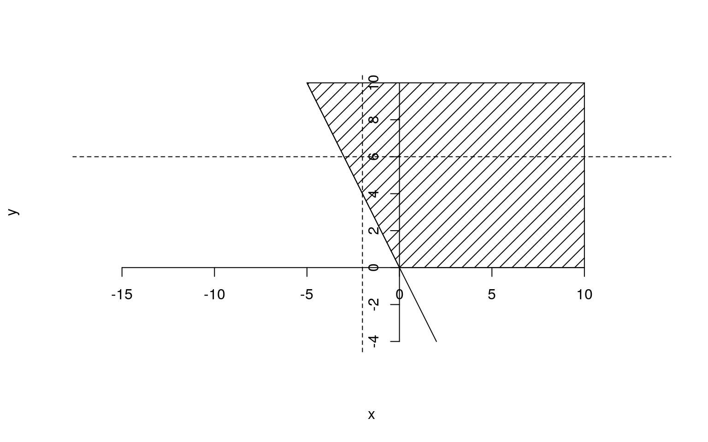

STAT562 Notes
STAT562 Notes
4. Multiple Random Variables
4.3 Bivariate Transformations
Example 4.3.1 (Distribution of the sum of Poisson variables) Let X and Y be independent Poisson random variables with parameters \(\theta\) and \(\lambda\), respectively. Thus the joint pmf of (X,Y) is
\[f_{X,Y}(x,y)=\frac{\theta^xe^{-\theta}}{x!}\frac{\lambda^ye^{-\lambda}}{y!},\quad x=0,1,2,..,y=0,1,2,..\]
define \(U=X+Y\) and \(V=Y\)
\[f_{U,V}(u,v)=f_{X,Y}(u-v,v)=\frac{\theta^{u-v}e^{-\theta}}{(u-v)!}\frac{\lambda^ve^{-\lambda}}{v!},\quad v=0,1,2,..,u=v,v+1,v+2,..\]
Theorem 4.3.2 if \(X\sim Poisson(\theta)\) and \(Y\sim Poisson(\lambda)\) and X and Y are indepedent, then \(X+Y\sim Poisson(\theta+\lambda)\).
2019.01.08 p.12
Using Moment Generating Function (Theorem 4.2.12)
\[M_W(t)=M_X(t)M_Y(t)=e^{\mu_1(e^t-1)}e^{\mu_2(e^t-1)}=e^{(\mu_1+\mu_2)(e^t-1)}\]
So \(W\sim Poisson(\mu_1+\mu_2)\)
If (X,Y) is a continuous random vector with joint pdf \(f_{X,Y}(x,y)\), then the joint pdf of (U, V) can be expressed in terms of \(f_{X,Y}(x,y)\) in a manner analogous to (2.1.8). As before, \(A=\{(x,y):f_{X,Y}(x,y)>0\}\) and \(B=\{(u,v): u=g_1(x,y)\ \text{and}\ v=g_2(x,y)\ \text{for some}\ (x,y)\in A\}\). The joint pdf \(f_{U,V}(u,v)\) will be positive on the set B. For the simplest version of this result we assume that the transformation \(u=g_1(x,y)\) and \(v=g_2(x,y)\) defines a one-to-one transformation of A onto B. The transformation is onto because of the definition of B. We are assuming that for each \((u,v)\in B\) there is only one \((x,y)\in A\) such that \((u,v)=(g_1(x,y),g_2(x,y))\). For such a one-to-one, onto transformation, we can solve the equations \(u=g_1(x,y)\) and \(v=g_2(x,y)\) for x and y in terms of u and v. We will denote this inverse transformation by \(x=h_1(u,v)\) and \(y=h_2(u,v)\). The role played by a derivative in the univariate case is now played by a quantity called the Jacobian of the transformation. This function of (u,v), denoted by J, is the determinant of a matrix of partial derivatives. It is defined by
\[J=\begin{vmatrix}\frac{\partial x}{\partial u} & \frac{\partial x}{\partial v} \\ \frac{\partial y}{\partial u} & \frac{\partial y}{\partial v} \end{vmatrix}=\frac{\partial x}{\partial u}\frac{\partial y}{\partial v}-\frac{\partial y}{\partial u}\frac{\partial x}{\partial v}\] where
\[\frac{\partial x}{\partial u}=\frac{\partial h_1(u,v)}{\partial u},\ \frac{\partial x}{\partial v}=\frac{\partial h_1(u,v)}{\partial v},\ \frac{\partial y}{\partial u}=\frac{\partial h_2(u,v)}{\partial u},\ \frac{\partial y}{\partial v}=\frac{\partial h_2(u,v)}{\partial v}\]
We assume that J is not identically 0 on B. Then the joint pdf of (U,V) is 0 outside the set B and on the set B is given by
\[f_{U,V}(u,v)=f_{X,Y}(h_1(u,v),\ h_2(u,v))|J|,\]
The “reproductive” property: adding independent r.v.s from a family of distribution produces a new r.v. from the same family.
Example 4.3.3 (Distribution of the product of beta variables) Let \(X\sim Beta(α,β)\) and \(Y\sim Beta(α+β,\gamma)\) be independent random variables. The joint pdf of \((X,Y)\) is
\(X\sim Beta(\alpha,\beta)\), \(Y\sim Beta(\alpha+\beta,\gamma)\) \(X,Y\) indep, \(U=XY\), \(f_U(u)\sim n(\alpha,\beta+\gamma)\)
Example 4.3.4 (Sum and difference of normal variables):
\(X\sim n(0,1)\), \(Y\sim n(0,1)\) \(X,Y\) indep, \(X-Y\sim n(0,2)\), \(X-Y\sim n(0,2)\)
Example 2019.01.10 p.1-5
Let X and Y have joint pdf \(f(x,y)=\frac14e^{-\frac{x+y}2}\), \(0<x<\infty,0<y<\infty\). Find the pdf for \(u=\frac{X-Y}2\).
Let \(v=Y\) so that the system is invertible. \(X=2u+v, Y=v\)
\[J=\begin{vmatrix}\frac{\partial x}{\partial u} & \frac{\partial x}{\partial v} \\ \frac{\partial y}{\partial u} & \frac{\partial y}{\partial v} \end{vmatrix}=\begin{vmatrix}2 & 1 \\ 0 & 1 \end{vmatrix}=2\]
\[g(u,v)=f(x,y)|J|=\frac14e^{-\frac{x+y}2}2=\frac12e^{-\frac{2u+v+v}2}=\frac12e^{-(u+v)}\]

\[0<x<\infty,0<y<\infty\implies0<2u+v<\infty,0<v<\infty\implies v>-2u\]
\[g_U(u)=\left\{ \begin{array}\ \int_{-2u}^\infty\frac12e^{-(u+v)}dv=\frac12e^{-u}\int_{-2u}^\infty e^{-v}dv=\frac12e^{-u}\left[-e^{-v}\right]_{-2u}^\infty=\frac12e^{-u}\left[0+e^{2u}\right] & u<0 \\ \int_{0}^\infty\frac12e^{-(u+v)}dv=\frac12e^{-u}\int_{0}^\infty e^{-v}dv=\frac12e^{-u}\left[-e^{-v}\right]_{0}^\infty=\frac12e^{-u}\left[0+1\right] & u\ge0 \end{array} \right\}=\frac12e^{|u|}\] which is Double Exponential or Laplace Distribution
2019.01.15``p.11-14
Theorem 4.3.5 Let X and Y be independent random variables. Let \(g(x)\) be a function only of a; and \(h(y)\) be a function only of y. Then the random variables \(U=g(X)\) and \(V=h(Y)\) are independent.
Proof
We will prove the theorem assuming U and V are continuous random variables. For any \(u\in R,v\in R\),define
\[\begin{array}\mathcal{A_u}=\{x:g(x)\le u\}\\ \mathcal{B_v}=\{y:h(y)>v\}\end{array}\]
Then the joint cdf of (U,V) is
\[F_{U,V}(u,v)\begin{array}{l} =P(U\le u,V\le v) & \text{definition of cdf} \\ = P(X\in A_u, Y\in B_v) & \text{definition of U and V} \\ = P(X\in A_u)P(Y\in B_v) & \text{Theorem 4.2.10} \end{array}\]
The joint pdf of (U,V) is
\[F_{UV}(u,v)=\frac{\partial^2}{\partial{u}\partial{v}}F_{UV}(u,v)=\left(\frac{d}{du}P(X\in A_u)\right) \left(\frac{d}{dv}P(Y\in B_v)\right)\]
where, as the notation indicates, the first factor is a function only of u and the second factor is a function only of v. Hence, by Lemma 4.2.7, U and V are independent.
\[f_{U,V}(u,v)=\sum_{i=1}^kf_{X,Y}(h_{1i}(u,v),\ h_{2i}(u,v))|J_i|\]
2019.01.10``p.6-9
Example 4.3.6 (Distribution of the ratio of normal variables) Let X and Y be independent \(n(0,1)\) random variables. Consider the transformation \(U =\frac{X}Y\) (and V=|Y| in textbook) find the pdf of u
\[\left.\begin{array}\mathcal{A_0}=\{(x,y):y=0\}\\ \mathcal{A_1}=\{(x,y):y>0\} \\ \mathcal{A_2}=\{(x,y):y<0\} \\ \end{array}\right\}\to\mathcal{B}=\{(u,v):v>0\}\]
Let \(V=Y\), \(Y=V\),\(U=\frac XV\),\(X=UV\)
\[J=\begin{vmatrix}v & u \\ 0 & 1 \end{vmatrix}=v\]
\[g(u,v)=f(x,y)|J|=\frac1{\sqrt{2\pi}}e^{-\frac{x^2}2}\frac1{\sqrt{2\pi}}e^{-\frac{y^2}2}|V|=\frac1{2\pi}e^{-\frac{u^2v^2+v^2}2}|V|=\frac1{2\pi}e^{-\frac{(u^2+1)v^2}2}|V|\]
\[-\infty<x<\infty,-\infty<y<\infty\implies-\infty<uv<\infty,-\infty<v<\infty\] Because the inegrated was an even function
\[g_U(u)=\int_{-\infty}^{\infty}\frac1{2\pi}e^{-\frac{(u^2+1)v^2}2}|V|dv=2\int_{0}^{\infty}\frac1{2\pi}e^{-\frac{(u^2+1)v^2}2}vdv\]
Let \(s=\frac{(u^2+1)v^2}2\), \(ds=(u^2+1)vdv\)
\[g_U(u)=\frac1\pi\int_0^{\infty}e^{-s}\frac1{u^2+1}ds=\frac1\pi\frac1{u^2+1}\left[-e^{-s}\right]_0^\infty=\frac1\pi\frac1{u^2+1},-\infty<u<\infty\] which is the Cauchy distribution.
4.4 Hierarchical Models and Mixture Distributions
2019.01.08 p.1
\(E[X]=\int_{-\infty}^{\infty}xf(x)dx\) is a real number.
\(E[X|y]=\int_{-\infty}^{\infty}xf(x|y)dx\) is a function of y.
\(E[X|Y]=\int_{-\infty}^{\infty}xf(x|y)dx\) is a random variable, and is a function of the r.v Y.
Definition: \(V[X|Y]=E[(X-E[X|Y])^2|Y]\)
2019.01.08``p.2-3
Theorem 4.4.3 Law of iterated Expectation if X and Y are any two random variables, then
\[EX=E(E(X|Y))\]
provided that the expectation exist.
Proof:Law of iterated expectations
\[E(E(X|Y))=\int_{-\infty}^{\infty}E[X|y]g(y)dy=\int_{-\infty}^{\infty}\left[\int_{-\infty}^{\infty}xf(x|y)dx\right]g(y)dy=\int_{-\infty}^{\infty}\left[\int_{-\infty}^{\infty}x\frac{f(x,y)}{g(y)}dx\right]g(y)dy\]
\[=\int_{-\infty}^{\infty}\left[\int_{-\infty}^{\infty}{f(x,y)dy}\right]xdx=\int_{-\infty}^{\infty}f_X(x)xdx=E[X]\]
Theorem 4.4.7 (Conditional variance identity) For any two random varibles X and Y,
2019.01.08``p.4-6
\[VarX=E(Var(X|Y))+Var(E(X|Y))\]
provided that the expectation exist.
Proof:
\[V[X]=E[(X-\mu_x)^2]=E[(X-E[X|Y]+E[X|Y]-\mu_x)^2]=E[(X-E[X|Y])^2]+E[(E[X|Y]-\mu_x)^2]+2E[(X-E[X|Y])(E[X|Y]-\mu_x)]\]
\[2E[(x-E[X|y])(E[X|y]-\mu_x)]=2\int_{-\infty}^{\infty}\int_{-\infty}^{\infty}(x-E[X|y])(E[X|y]-\mu_x)f(x,y)dxdy=2\int_{-\infty}^{\infty}(E[X|y]-\mu_x)\left\{\int_{-\infty}^{\infty}(x-E[X|y])f(x,y)dx\right\}dy=0\]
\[\int_{-\infty}^{\infty}(x-E[X|y])f(x,y)dx=\int_{-\infty}^{\infty}xf(x,y)dx-E[X|y]\int_{-\infty}^{\infty}f(x,y)dx=\int_{-\infty}^{\infty}xf(x|y)g(y)dx-E[X|y]g(y)=g(y)E[X|y]-E[X|y]g(y)\]
(using law of iterated expcetations) \(E[(X-E[X|Y])^2]=E[E(X-E[X|Y])^2|Y]=E(Var(X|Y))\)
Let \(W=E[X|Y]\), then \(E[w]=E(E[X|Y])=E[X]=\mu_x\), \(E[(E[X|Y]-\mu_x)^2]=E[(W-E[w])^2]=V[W]=V[E(X|Y)]\)
4.5 Covariance and Correlation
2019.01.08``p.8
Definition 4.5.1 The covariance of X and Y is the number defined by
\[Cov(X,Y)=E((X-\mu_X)(Y-\mu_Y))=\sigma_{XY}\]
p.10
Definition 4.5.2 The correlation of X and Y is the number defined by
\[\rho_{XY}=\frac{\sigma_{XY}}{\sigma_X\sigma_Y};\quad Corr(X,Y)=\frac{Cov(X,Y)}{\sqrt{Var(X)Var(Y)}}\]
p.9 Alternate formate:
Theorem 4.5.3 For any two random varibles X and Y,
\[\sigma_{XY}=Cov(X,Y)=E[XY]-\mu_X\mu_Y\]
\(\sigma_{XY}=E[(X-\mu_X)(Y-\mu_Y)]=E[XY-Y\mu_X-X\mu_Y+\mu_X\mu_Y]=E[XY]-E[Y]\mu_X-E[X]\mu_Y+\mu_X\mu_Y=E[XY]-\mu_Y\mu_X-\mu_X\mu_Y+\mu_X\mu_Y=E[XY]-\mu_X\mu_Y\)
2019.01.15``p.2-3
Properties of \(Cov(x,y)\)
\[\begin{array}{l} Cov(aX,bY)=abCov(X,Y) & (1)\\ Cov(X,Y+Z)=Cov(X,Y)+Cov(X,Z) & (2) \\ Cov(X,c)=0 & (3) \end{array}\]
\[Cov(X,X)=E[X^2]-\mu_X^2\]
Properties (1) and (2) make \(Cov(x,y)\) a bilinear operator.
2019.01.10``p.10-13
Example 4.5.4 (Correlation-I)
\(f(x,y)=x+y\), \(0<x<1,0<y<1\), find \(\rho_{XY}\)
\(E[XY]=\int_0^1\int_0^1xy(x+y)dxdy=\int_0^1[\frac13x^3y+\frac12x^2y^2]_{x=0}^1dy=\int_0^1[\frac13y+\frac12y^2]dy=[\frac16y^2+\frac16y^3]_{x=0}^1=\frac13\)
\[f_X(x)=\int_0^1(x+y)dy=\left.xy+\frac12y^2\right|_{y=0}^1=x+\frac12, 0<x<1\]
\(E[X]=\int_0^1x(x+\frac12)dx=\left.\frac13x^3+\frac14x^2\right|_{0}^1=\frac7{12}\)
\(E[X^2]=\int_0^1x^2(x+\frac12)dx=\left.\frac14x^4+\frac16x^3\right|_{0}^1=\frac5{12}\)
Because X and Y were interchangeable in \(f(x,y)\), we can conclude
| marginal pdf | E[] | \(E[^2]\) | \(\sigma=\sqrt{E[^2]-(E[])^2}\) | |
|---|---|---|---|---|
| X | \(x+\frac12\) | \(\frac7{12}\) | \(\frac5{12}\) | \(\frac{\sqrt{11}}{12}\) |
| Y | \(y+\frac12\) | \(\frac7{12}\) | \(\frac5{12}\) | \(\frac{\sqrt{11}}{12}\) |
\(\sigma_{XY}=\frac13-\frac7{12}\frac5{12}=-\frac1{144}\)
\(\sigma_{X}=\sigma_{Y}=\sqrt{\frac5{12}-(\frac7{12})^2}=\frac{\sqrt{11}}{12}\)$
\[\rho_{XY}=\frac{-\frac1{144}}{\frac{\sqrt{11}}{12}\frac{\sqrt{11}}{12}}=-\frac1{11}\]
Theorem 4.5.5 If X and Y are independent (uncorrelated) random variables, then \(Cov(X,Y)=0\) and \(\rho_{XY}=0\)
Always check if X and Y are independent. When \(y=x^2\), X and Y are dependent, but \(Cov(X,Y)=0\)
Theorem 4.5.6 If X and Y are any two random variables and a and b are any two constants, then
\[Var(aX+bY)=a^2VarX+b^2VarY+2abCov(X,Y)\] If X and Y are independent random variables, then
\[Var(aX+bY)=a^2VarX+b^2VarY\]
2019.01.15``p.7
\[Var(X+Y)=VarX+VarY+2Cov(X,Y)\]
If X and Y are uncorrelated, then
\[Var(X+Y)=VarX+VarY\]
Theorem 4.5.7 For any random variables X and Y,
- \(-1\le \rho_{XY}\le1\).
- \(|\rho_{XY}|=1\) if and only if there exist numbers \(a\neq0\) and b such that \(P(Y=aX+b)=1\). If \(\rho_{XY}=1\), then \(a>0\), and if \(\rho_{XY}=-1\), then \(a<0\).
2019.01.10``p.14-17
What does actually measure?
Suppose \(E[Y|X]\) is a linear function of X, or suppose that \(E[Y|X]=a+bx\),
then \(E[Y]=E[E[Y|X]]=E[a+bX]=a+bE[X]\), by 4.4.3
Also, \(E[XE[Y|X]]=E[X(a+bX)]=aE[X]+bE[X^2]\)
Alternately, \(E[XE[Y|X]]=\int_{-\infty}^{\infty}xE[Y|x]f_X(x)dx\), by 2.2.1
\(=\int_{-\infty}^{\infty}x\left[\int_{-\infty}^{\infty}yf_Y(y|x)dy\right]f_X(x)dx\), by 4.2.3
\(=\int_{-\infty}^{\infty}\int_{-\infty}^{\infty}xyf(x,y)dydx=E[XY]\), by 4.1.10. Now
\[\sigma_{XY}=E[XY]-\mu_X\mu_Y=a\mu_X+bE[X^2]-\mu_X\mu_Y=a\mu_X+b(\sigma_X^2+\mu_X^2)-\mu_X(a+b\mu_X)=b\sigma_X^2\]
\[\rho_{XY}=\frac{\sigma_{XY}}{\sigma_{X}\sigma_{Y}}=\frac{b\sigma_X^2}{\sigma_{X}\sigma_{Y}}=b\frac{\sigma_X}{\sigma_Y}\]
\(\rho_{XY}\), \(Cov(X,Y)\), and b have same sign.
2019.01.15``p.6
Cauchy-Schuwarz also says that equality occurs iff \(\vec u= c\vec v\) for some c
So \(|\rho_{XY}|=1\) iff \(Y-\mu_Y=c(X-\mu_X)\), \(Y=cX-\mu_Y-c\mu_X)\)
Therefore, the correlation equals \(\pm1\) iff Y is a perfect linear function of X.
Example 4.5.8 (Correlation-II)
Example 4.5.9 (Correlation-III)
Definition 4.5.10 bivariate normal pdf with \(\mu_X,\mu_Y,\sigma_X^2,\sigma_Y^2, \rho\)
\(f_X(x)\sim n(\mu_X,\sigma^2_X)\) \(f_Y(y)\sim n(\mu_Y,\sigma^2_Y)\)
\(f_{Y|X}(y|x) \sim n(\mu_Y+\rho\frac{\sigma_Y}{\sigma_X})(x−\mu_X),\sigma_Y^2(1-\rho^2)\)
\(aX+bY\sim n(a\mu_X+b\mu_Y,a^2\mu_X^2+b^2\mu_Y^2+2ab\rho\sigma_X\sigma_Y\)
4.6 Multivariate Distributions
Definition 4.6.2 multinomial distribution with m trials and cell probabilities
Theorem 4.6.4 (Multinomial Theorem)
Definition 4.6.5 mutually independent random vectors
Theorem 4.6.6 (Generalization of Theorem 4.2. 10)
\[E(g_1(X_1)\cdots g_n(X_n))=(E(g_1(X_1))\cdots(E(g_n(X_n))\]
Theorem 4.6.7 (Generalization of Theorem 4.2.12)
\[M_Z(t)=(M_X(t))^n\]
Theorem 4.6.11 (Generalization of Lemma 4.2.1) Let \(X_1,.., X_n\) be random vectors. Then \(X_1,.., X_n\) are mutually independent random vectors if and only if there exist functions \(g_i(X_i),i=1,..,n\), such that the joint pdf or pmf of (\(X_1,..,X_n\)) can be written as
\[f(x_1,..,x_n) =g_1(x_1)\cdots g_n(x_n)\]
Theorem 4.6.12 (Generalization of Theorem 4.3.5) Let \(X_1,.., X_n\) be independent random vectors. Let \(g_i(X_i)\) be a function only of \(X_i,i=1,..,n\). Then the random variables \(U_i=g_i(X_i),i=1,..,n\), are mutually independent.
Example 4.6.13 (Multivariate change of variables)
4.7 Inequalities
4.7.1 Numerical Inequalities
Theorem 4.7.3 (Cauchy-Schwarz Inequality) For any two random variables X and Y,
\[|EXY|\le E|XY|\le(E|X|^2)^{\frac12}(E|X|^2)^{\frac12}\] 2019.01.15``p.4
Consider \(\{X-\mu_X| X \text{ is a random variable}\}\). That is, the set of all random variables with mean 0.
This is a well-defined vector space, where the scalars are the real number.
The covariance operator will satisfy the definition of an inner product on this vector space.
The Cauchy–Schwarz inequality says
The Cauchy–Schwarz inequality states that for all vectors u and v of an inner product space it is true that
\[|\langle\vec{u},\vec{v}\rangle|^{2}\le \langle \vec{u} ,\vec{u} \rangle \cdot \langle \vec{v},\vec{v}\rangle \] where \(\langle \cdot ,\cdot \rangle\) is the inner product. Examples of inner products include the real and complex dot product, see the examples in inner product. Equivalently, by taking the square root of both sides, and referring to the norms of the vectors, the inequality is written as
\[|\langle\vec{u},\vec{v}\rangle|\le \|\vec{u} \|\|\vec{v} \|\]
2019.01.15``p.5
Apply this to the covariance operator:
\[|Cov(X-\mu_X,Y-\mu_Y)|\ge \sqrt{Cov(X-\mu_X,X-\mu_X)}\cdot\sqrt{Cov(Y-\mu_Y,Y-\mu_Y)}\] \[|Cov(X,Y)|\le \sqrt{Var(X)Var(Y)}\implies |\sigma_{XY}|\le \sigma_{X}\sigma_{Y}\quad \therefore |\rho_{XY}|\le1\]
proof 4.5.7
Example 4.7.4 (Covariance inequality) If X and Y have means \(\mu_X,\mu_Y\) and variances \(\sigma_X^2,\sigma_Y^2\) , respectively, we can apply the Cauchy-Schwarz Inequality to get
\[E|(X-\mu_X)(Y-\mu_Y)|\le\{E(X-\mu_X)^2\}^{\frac12}\{E(Y-\mu_Y)^2\}^{\frac12}\]
Squaring both sides and using statistical notation, we have \((Cov(X, y))^2\le \sigma_X^2\sigma_Y^2\)
Recalling the definition of the correlation coefficient,\(\rho\), we have proved that $-1^21$1. Furthermore, the condition for equality in Lemma 4.7.1 still carries over, and equality is attained here only if \((X-\mu_X)=c(Y-\mu_Y)\), for some constant c. That is, the correlation is \(\pm1\) if and only if X and Y are linearly related.
4.7.2 Functional Inequalities
Theorem 4.7.7 (Jensen’s Inequality)
Example 4.7.8 (An inequality for means) Jensen’s Inequality can be used to prove an inequality between three different kinds of means. If \(a_1,..,a_n\) are positive numbers, define
\[\begin{array}{l} a_A=\frac1n(a_1+a_2+..+a_n)&\text{(arithmetic mean)}\\a_G=[a_1a_2\cdots a_n]^{\frac1n}&\text{(geometric mean)}\\a_H=\frac{1}{\frac1n(\frac1{a_1}+\frac1{a_2}+..+\frac1{a_n})}&\text{(harmonic mean)} \end{array}\]
An inequality relating these means is \(a_H\le a_G\le a_A\)
Theorem 4.7.9 (Covariance Inequality)
If \(g(x)\) is a nondecreasing function and h(x)$ is a nonincreasing junction, then \[E(g(X)h(X))\le(Eg(X))(Eh(X))\]
If \(g(x)\) and \(h(x)\) are either both nondecreasing or both nonincreasing, then \[E(g(X)h(X))\ge(Eg(X))(Eh(X))\]
5. Properties of a Random Sample
2019.01.15``p.8
5.1 Basic Concepts of Random Samples
Definition 5.1.1 The random variables \(X_1,..,X_n\) are called a random sample of size n from the population \(f(x)\) if \(X_1,..,X_n\) are mutually independent random variables and the marginal pdf or pmf of each \(X_i\) is the same function \(f(x)\). Alternatively, \(X_1,..,X_n\) are called independent and identically distributed random variables with pdf or pmf \(f(x)\). This is commonly abbreviated to \(iid\) random variables.
\[f(x_1,..,x_n) =f(x_1)\cdots f(x_n)=\prod_{i=1}^nf(x_i)\]
5.2 Sums of Random Variables from a Random Sample
Definition 5.2.1 Let \(X_1,..,X_n\) be a random sample of size n from a population and let \(T(x_1,..,x_n)\) be a real-valued or vector-valued function whose domain includes the sample space of (\(X_1,..,X_n\)). Then the random variable or random vector \(Y=T(X_1,..,X_n)\) is called a statistic. The probability distribution of a statistic Y is called the sampling distribution of Y.
2019.01.15``p.9
Definition 5.2.2 The sample mean is the arithmetic average of the values in a random sample. It is usually denoted by
\[\bar X=\frac{X_1+..+X_n}{n}=\frac1n\sum_{i=1}^nX_i\]
Definition 5.2.3 The sample variance is the statistic defined by
\[S^2=\frac1{n-1}\sum_{i=1}^n(X_i-\bar X)^2=\frac1{n-1}(\sum_{i=1}^nX_i^2-n\bar X^2)\] The sample standard deviation is the statistic defined by \(S=\sqrt{S^2}\)
Theorem 5.2.4 a. \(\sum_{i=1}^n(X_i-a)^2\) is minimized when \(a=\bar x\)
Proof
Let \(g(a)=\sum_{i=1}^n(X_i-a)^2\), set
\[g'(a)=\sum_{i=1}^n2(X_i-a)(-1)=0\implies a=\frac1n\sum_{i=1}^nX_i=\bar x\]
\[(n-1)s^2=\sum_{i=1}^n(x_i-\bar x)^2=\sum_{i=1}^nx_i^2-n\bar x^2\]
Lemma 5.2.5
\[(5.2.1)\quad E\left(\sum_{i=1}^ng(X_i) \right)=nE(g(X_1))\] (5.2.1) is true for any collection of n identically distributed random variables.
\[Var\left(\sum_{i=1}^ng(X_i) \right)=nVar(g(X_1))\]
Theorem 5.2.6
\[E\bar X=\mu\] \[Var\bar X=\frac{\sigma^2}n\] \[ES^2=\sigma^2\]
Theorem 5.2.7
\[M_{\bar X}(t)=[M_X(\frac{t}n)]^n\]
Example 5.2.8 (Distribution of the mean) Let \(X_1,..,X_n\) be a random sample from a \(n(\mu,\sigma^2)\) population. Then the mgf of the sample mean is
\[M_{\bar X}(t)=\left[e^{\mu\frac{t}n+\frac{\sigma^2{(\frac{t}n)}^2}2}\right]^n=e^{\mu t+\frac{(\frac{\sigma^2}{n})t^2}2}\]
Thus, \(\bar X\) has a \(n(\mu,\frac{\sigma^2}n)\) distribution.
Another simple example is given by a \(Gamma(α,β)\) random sample (4.6.8). Here, we can also easily derive the distribution of the sample mean. The mgf of the sample mean is
\[M_{\bar X}(t)=\left[\left(\frac1{1-\beta(\frac{t}n)}\right)^{a}\right]^n=\left(\frac1{1-\beta(\frac{t}n)}\right)^{na}\]
which we recognize as the mgf of a \(gGamma(nα,β/n)\), the distribution of \(\bar X\).
\[\mu_{\bar X}=nα\cdot\fracβn=αβ=\mu\] \[\sigma^2_{\bar X}=nα\cdot(\fracβn)^2=\frac{αβ^2}n=\frac{\sigma^2}n\]
If Theorem 5.2.7 is not applicable, because either the resulting mgf of \(\bar X\) is unrecognizable or the population mgf does not exist, then the transformation method of Section 4.3 and 4.6 might be used to find the pdf of \(Y=(X_1+..+X_n)\) and \(\bar X\). In such cases, the following convolution formula is useful.
Theorem 5.2.9 Convolution formula If X and Y are independent continuous random variables with pdfs \(f_X(x)\) and \(f_Y(y)\), then the pdf of \(Z=X+Y\) is \[f_Z(z) =\int_{-\infty}^{\infty}f_X(w)f_Y(z-w)dw\]
Example 5.2.10 (Sum of Cauchy random variables) As an example of a situation where the mgf technique fails, consider sampling from a Cauchy distribution. We will eventually derive the distribution of \(\bar Z\), the mean of \(Z_1,..,Z_n\) iid \(Cauchy(0,1)\) observations. We start, however, with the distribution of the sum of two independent Cauchy random variables and apply formula (5.2.3). Let U and V be independent Cauchy random variables, \(U\sim Cauchy(0,\sigma)\) and \(V\sim Cauchy(0,\tau)\); that is,
\[f_U(u)=\frac1{\pi\sigma}\frac1{1+(\frac{u}\sigma)^2},\quad f_V(v)=\frac1{\pi\tau}\frac1{1+(\frac{v}\tau)^2},\quad\begin{array}\ -\infty<u<\infty\\-\infty<v<\infty\end{array}\]
Based on formula (5.2.3), the pdf of \(Z=U+V\) is given by
\[f_Z(z)=\int_{-\infty}^{\infty}\frac1{\pi\sigma}\frac1{1+(\frac{w}\sigma)^2}\frac1{\pi\tau}\frac1{1+(\frac{z-w}\tau)^2}dw,\quad -\infty<z<\infty\]
This integral is somewhat involved but can be solved by a partial fraction decomposition and some careful anti differentiation (see Exercise 5.7) . The result is
\[f_Z(z)=\frac1{\pi(\sigma+\tau)}\frac1{1+(\frac{z}{\sigma+\tau})^2},\quad -\infty<z<\infty\]
Thus, the sum of two independent Cauchy random variables is again a Cauchy, with the scale parameters adding. It therefore follows that if \(Z_1,..,Z_n\) iid \(Cauchy(0,1)\) random variables, then \(\sum Z_i\) is \(Cauchy(0,n)\) and also \(\bar Z\) is \(Cauchy(0,1)\). The sample mean has the same distribution as the individual observations. (See Example A.0.5 in Appendix A for a computer algebra version of this calculation.)
Suppose \(X_1,..,X_n\) is a random sample from \((\frac1\sigma)f(\frac{x-\mu}{\sigma})\), a member of a location-scale family. Then the distribution of \(\bar X\) has a simple relationship to the distribution of \(\bar Z\), the sample mean from a random sample from the standard pdf \(f(z)\). To see the nature of this relationship, note that from Theorem 3.5.6 there exist random variables \(Z_1,..,Z_n\) such that \(Xi=\sigma Z_i+\mu\) and the pdf of each \(\bar Z_i\) is \(f(z)\). Furthermore, we see that \(Z_1,..,Z_n\) are mutually independent. Thus \(Z_1,..,Z_n\) is a random sample from \(f(z)\). The sample means \(\bar X\) and \(\bar Z\) are related by
\[\bar X=\frac1n\sum_{i=1}^nX_i=\frac1n\sum_{i=1}^n(\sigma Z_i+\mu)=\frac1n(\sigma \sum_{i=1}^nZ_i+n\mu)=\sigma\bar Z+\mu\]
Thus, again applying Theorem 3.5.6, we find that if \(g(z)\) is the pdf of \(\bar Z\), then \((\frac1\sigma)g(\frac{x-\mu}{\sigma})\) is the pdf of \(\bar X\). It may be easier to work first with \(Z_1,..,Z_n\) and \(f(z)\) to find the pdf \(g(z)\) of \(\bar Z\). If this is done, the parameters \(\mu\), and \(\sigma\) do not have to be dealt with, which may make the computations less messy. Then we immediately know that the pdf of \(\bar X\) is \((\frac1\sigma)g(\frac{x-\mu}{\sigma})\).
In Example 5.2. 10, we found that if \(Z_1,..,Z_n\) is a random sample from a \(Cauchy(0,1)\) distribution, then Z also has a \(Cauchy(0,1)\) distribution. Now we can conclude that if \(X_1,..,X_n\) is a random sample from a \(Cauchy(\mu,\sigma)\) distribution, then \(\bar X\) also has a \(Cauchy(\mu,\sigma)\) distribution. It is important to note that the dispersion in the distribution of \(\bar X\), as measured by \(\sigma\), is the same, regardless of the sample size \(n\). This is in sharp contrast to the more common situation in Theorem 5.2.6 (the population has finite variance) , where \(Var\bar X=\frac{\sigma^2}n\) decreases as the sample size increases.
5.3 Sampling from the Normal Distribution
5.3.1 Properties of the Sample Mean and Variance
Theorem 5.3.1
\[ f_{\chi^2}(x)=\frac{x^{\frac{p}2-1}}{\Gamma \frac{p}2 2^{\frac{p}2}}e^{-\frac{x}2}, x>0\]
Lemma 5.3.2
Lemma 5.3.3 2019.01.24``p.1
\(U=\sum_{i=1}^na_ix_i, V=\sum_{j=1}^nb_jx_j\)
\(Cov(U,V)=\sum_{i=1}^n\sum_{j=1}^na_ib_jCov(x_i,x_j)=0\)
5.3.2 The Derived Distributions: Student’s t and Snedecor’s F
Definition 5.3.4 T
\[f_{T}(x)=\frac{\Gamma(\frac{p+1}2)}{\Gamma(\frac{p}2)\sqrt{p\pi}}\left (1+\frac{x^2}{p}\right)^{-\frac{p+1}2},-\infty<x<\infty\]
Definition 5.3.6
\[f_{F}(x)=\frac{\Gamma(\frac{p+q}2)}{\Gamma(\frac{p}2)\Gamma (\frac{q}2)}(\frac{p}q)^{\frac{p}2}\frac{x^{\frac{p}2-1}}{(1+\frac{p}qx)^{\frac{p+q}2}}, x>0\]
Theorem 5.3.8
\(X\sim F_(p,q)\) \(\frac{1}X \sim F_(q,p)\)
\(X\sim T_(q)\) \(X^2 \sim F_(1,q)\)
\(X\sim F_(p,q)\) \(\frac{\frac{p}{q}X}{1+\frac{p}{q}X} \sim Beta(\frac{p}2,\frac{q}2)\)
5.4 Order Statistics
Definition 5.4.2 The notation \(\{b\}\), when appearing in a subscript, is defined to be the number \(b\) rounded to the nearest integer in the usual way. More precisely, if \(i\) is an integer and \(i-.5\le b<i+.5\), then \(\{b\}=i\).
Theorem 5.4.3 Let \(X_1,..,X_n\) be a random sample from a discrete distribution with pmf \(f_X(x_i)=P_i\), where \(x1<x2<..\) are the possible values of \(X\) in ascending order.
Let \(X_{(1)},..,X_{(n)}\) denote the order statistics from the sample. Then
\[P(X_{(j)}\le X_i)=\sum^n_{k=j}\binom{n}{k}P^k_i(1-P_i)^{n-k}\] \[P(X_{(j)}=X_i)=\sum^n_{k=j}\binom{n}{k}[P^k_i(1-P_i)^{n-k}-P^k_{i-1}(1-P_{i-1})^{n-k}]\]
Theorem 5.4.4 2019.01.29``p.9 Let \(X_{(1)},..,X_{(n)}\) denote the order statistics of a random sample, \(X_1,..,X_n\) from a continuous population with cdf \(Fx (x)\) and pdf \(f_X(x)\). Then the pdf of \(X_{(n)}\) is
\[(5.4.4)\quad f_{X_{(j)}}(x)=\frac{n!}{(j-1)!(n-j)!}f_X(x)[F_X(x)]^{j-1}[1-F_X(x)]^{n-j}\]
\[f_{K}(x)=\frac{n!}{(j-1)!(n-j)!}K[F_X(x)]^{k-1}[1-F_X(x)]^{n-k}f(x)\]
Example 5.4.5 (Uniform order statistic pdf) Let \(X_{(1)},..,X_{(n)}\) be iid \(Unif(0,1)\) , so \(f_X(x)=1\) for \(x\in(0,1)\) and \(F_X(x)=x\) for \(x\in(0,1)\). Using (5.4.4), we see that the pdf of the \(j^{th}\) order statistic is
\[f_{X_{(j)}}(x)=\frac{n!}{(j-1)!(n-j)!}x^{j-1}(1-x)^{n-j}=\frac{\Gamma(n+1)}{\Gamma(j)\Gamma(n-j+1)}x^{j-1}(1-x)^{n-j+1-1}\]
\[E{X_{(j)}}=\frac{j}{n+1},\quad Var{X_{(j)}}=\frac{j(n-j+1)}{(n+1)^2(n+2)}\]
Theorem 5.4.6
\[f_{X_{(i)},X_{(j)}}(u,v)=\frac{n!}{(i-1)!(j-1-i)!(n-j)!}f_X(u)f_X(v)[F_X(u)]^{i-1}[F_X(v)-F_X(u)]^{j-1-i}[1-F_X(v)]^{n-j}, -\infty<u<v<\infty\]
Example 5.4.7 (Distribution of the midrange and range)
5.5 Convergence Concepts
5.5.1 Convergence in Probability
Definition 5.5.1 A sequence of random variables, \(X_1,X_2,..\), \(\underrightarrow{\mathcal{P}}\) \(X\) if, for every \(\varepsilon>0\),
\[\begin{cases}\lim_{n\to\infty}P(|X_n-X|\ge\epsilon)=0\\\lim_{n\to\infty}P(|X_n-X|<\epsilon)=1\end{cases}\]
Theorem 5.5.2 (Weak Law of Large Numbers) Let \(X_1,X_2,..\) be iid random variables with \(EX_i=\mu\) and \(Var Xi =\sigma^2<\infty\). Define \(\bar X_n=\frac1n\sum_{i=1}^nX_i\) Then, for every \(\epsilon>0\)
\[\lim_{n\to\infty}P(|\bar X_n-\mu|<\epsilon)=1\] that is, \(\bar X_n\) converges in probability to \(\mu\).
Example 5.5.3 (Consistency of \(S^2\)) Suppose we have a sequence\(X_1,X_2,..\) of iid random variables with \(EX_i=\mu\) and \(Var Xi =\sigma^2<\infty\). If we define \(S_n^2=\frac1{n-1}\sum_{i=1}^n(X_i-\bar X)^2\)
a sufficient condition that \(VarS^2_n\) converges in probability to \(\sigma^2\) is that \(VarS^2_n\to0\) as \(n\to\infty\)
Theorem 5.5.4 Suppose that \(X_1, X2,..\) converges in probability to a random variable X and that h is a continuous function. Then \(h(X_1),h(X2),..\) converges in probability to \(h(X)\).
Example 5.5.5 (Consistency of S) If \(S^2_n\) is a consistent estimator of \(\sigma^2\), then by Theorem 5.5.4, the sample standard deviation \(S_n=\sqrt{S^2_n}=h(S^2_n)\) is a consistent estimator of \(\sigma\). Note that \(S_n\) is, in fact, a biased estimator of \(\sigma\) (see Exercise 5.11), but the bias disappears asymptotically.
5.5.2 Almost Sure Convergence
Definition 5.5.6 A sequence of random variables, \(X_1,X_2,..\), converges almost surely to a random variable \(X\) if, for every \(\epsilon>0\), \[P(\lim_{n\to\infty}|X_n-X|<\epsilon)=1\]
Example 5.5.7 (Almost sure convergence)
Example 5.5.8 (Convergence, not almost surely)
Theorem 5.5.9 (Strong Law of Large Numbers) Let \(X_1,X_2,..\), be iid random variables with \(EX_i=\mu\) and \(Var Xi =\sigma^2<\infty\), and define \(\bar X_n=\frac1n\sum_{i=1}^nX_i\). Then, for every \(\epsilon>0\), \[P(\lim_{n\to\infty}|\bar X_n-\mu|<\epsilon)=1\] that is, \(\bar X_n\) converges almost surely to \(\mu\)
5.5.3 Convergence in Distribution
Definition 5.5.10 A sequence of random variables, \(X_1,X_2,..\), converges in distribution to a random variable \(X\) if \[\lim_{n\to\infty}F_{X_n}(x)=F_X(x)\] at all points \(x\) where \(F_X(x)\) is continuous.
Example 5.5.11 (Maximum of uniforms)
Theorem 5.5.12 If the sequence of random variables, \(X_1,X_2,..\) converges in probability to a random variable \(X\) the sequence also converges in distribution to \(X\).
Theorem 5.5.13 The sequence of random variables, \(X_1,X_2,..\), converges in probability to a constant \(\mu\) if and only if the sequence also converges in distribution to \(\mu\). That is, the statement
\[\forall\varepsilon>0, P(|X_n-\mu|>\varepsilon)\to0\iff P(X_n\le x)\to\begin{cases}0&x<\mu\\1&x\ge\mu\end{cases}\]
Theorem 5.5.14 (Central Limit Theorem) Let \(X_1,X_2,..\) be a sequence of iid random variables whose mgfs exist in a neighborhood of 0 (that is, \(M_{X_i}(t)\) exists for \(|t|<h\), for some positive h). Let \(EX_i =\mu\) and \(VarX_i=\sigma^2>0\). (Both \(\mu\) and \(\sigma^2\) are finite since the mgf exists.) Define \(\bar X_n=(\frac1n)\sum_{i=1}^nX_i\). Let \(G_n(x)\) denote the cdf of \(\frac{\sqrt n(\bar X_n-\mu)}{\sigma}\). Then, for any x, \(-\infty< x <\infty\),
\[\lim_{n\to\infty}G_n(x)=\int_{-\infty}^x\frac1{\sqrt{2\pi}}e^{-\frac{y^2}2}dy\]
that is, \(\frac{\sqrt n(\bar X_n-\mu)}{\sigma}\) has a limiting standard normal distribution.
\[\underrightarrow{p}\quad \lim_{\substack{x\to\infty\\y\to\infty}}()\]
Theorem 5.5.15 (Stronger (orm of the Central Limit Theorem)
Example 5.5.16 (Normal approximation to the negative binomial)
Theorem 5.5.17 (Slutsky’s Theorem) If \(X_n\to X\) in distribution and \(Y_n\to a\), a constant, in probability, then
\(Y_nX_n\to aX\) in distribution
\(X_n+Y_n\to X+a\) in distribution
5.5.4 The Delta Method
Example 5.5.19 (Estimating the odds)
Definition 5.5.20
Theorem 5.5.21 (Taylor)
Example 5.5.22 (Continuation of Example 5.5.19)
Example 5.5.23 (Approximate mean and variance)
Theorem 5 .5.24 (Delta Method)
Example 5.5.25 (Continuation of Example 5.5.23)
Theorem 5.5.26 (Second-order Delta Method)
Example 5.5.27 (Moments of a ratio estimator)
Theorem 5.5.28 (Multivariate Delta Method)
5.6 Generating a Random Sample
5.6.1 Direct Methods
Example 5.6.1 (Exponential lifetime)
Example 5.6.2 (Continuation of Example 5.6.1)
Example 5.6.3 (Probability Integral Transform)
The relationship between the exponential and other distributions allows the quick generation of many random variables. For example, if \(U_j\) are iid \(uniform(0,1)\) random variables, then
\[Y_j=-\lambda\ln(u_j)\sim Expo(\lambda)\] \[Y=-2\sum_{j=1}^\nu\ln U_j\sim \chi^2_{2\nu}\] \[Y=-\beta\sum_{j=1}^\alpha\ln U_j\sim Gama(\alpha,\beta)\] \[Y=\frac{\sum_{j=1}^a\ln U_j}{\sum_{j=1}^{a+b}\ln U_j}\sim Beta(a,b)\]
Example 5.6.5 (Binomial random variable generation)
Example 5.6.6 (Distribution of the Poisson variance)
5.6.2 Indirect Methods
Example 5.6.7 (Beta random variable generation-I) generates a \(Beta(a,b)\) random variable.
If both a and b are integers, use the direct transformation method (5.6.5). Set \(U_j\) are iid \(uni(0,1)\) random variables, then \(Y=\frac{\sum_{j=1}^a\ln U_j}{\sum_{j=1}^{a+b}\ln U_j}\sim Beta(a,b)\)
If both a and b are not integers, To generate \(Y\sim beta(a, b)\):
Generate \((U,V)\) independent \(uni(0,1)\).
If \(U<\frac1cf_Y(V)\), set \(Y=V\); otherwise, return to step (a).
(See HW7)
5.6.3 The Accept/Reject Algorithm
Example 5.6.8 (See HW7)
Example 5.6.9 (Beta random variable generation-II)
6. Principles of Data Reduction
6.2 The Sufficiency Principle
6.2.1 Sufficient Statistics
Definition 6.2.1 A satistic \(T(\mathbf{X})\) is a sufficient statistic for \(\theta\) if the conditional distribution of the sample \(\mathbf{X}\) given the value of \(T(\mathbf{X})\) does not depend on \(\theta\).
Theorem 6.2.2 If \(p(\mathbf{x}|\theta)\) is the joint pdf or pmf of \(\mathbf{X}\) and \(q(t|\theta)\) is the pdf or pmf of \(T(\mathbf{X})\), then \(T(\mathbf{X})\) is a sufficient statistic for \(\theta\) if, for every \(\mathbf{x}\) in the sample space, the ratio \(p(\mathbf{x}|\theta)/q(T(\mathbf{X})|\theta)\) is constant as a function of \(\theta\).
Example 6.2.3 (Binomial sufficient statistic)
Example 6.2.4 (Normal sufficient statistic)
Example 6.2.5 (Sufficient order statistics)
Example 6.2.5 (Sufficient order statistics) Let \(X_1,..,X_n\) be iid from a pdf \(f\), where we are unable to specify any more information about the pdf (as is the case in nonparametric estimation). It then follows that the sample density is given by
\[f(\mathbf{x}|\theta)=\prod_{i=1}^nf(x_i)=\prod_{i=1}^nf(x_{(i)})\]
where \(x_{(1)}\le x_{(2)}\le...\le x_{(n)}\) are the order statistics.
Theorem 6.2.6 (Factorization Theorem) Let \(f(\mathbf{x}|\theta)\) denote the joint pdf or pmf of a sample \(\mathbf{X}\). A statistic \(T(\mathbf{X})\) is a sufficient statistic for \(\theta\) if and only if there exist functions \(g(x|\theta)\) and \(h(\mathbf{x})\) such that, for all sample points \(\mathbf{x}\) and all parameter points \(\theta\),
\[f(\mathbf{x}|\theta)= g(T(\mathbf{x})|\theta)h(\mathbf{x})\] Example 6.2.8 (Uniform sufficient statistic)
Example 6.2.9 (Normal sufficient statistic, both parameters unknown)
6.2.2 Minimal Sufficient Statistics
Definition 6.2.11 A sufficient statistic \(T(\mathbf{X})\) is called a minimal sufficient statistic if, for any other sufficient statistic \(T'(\mathbf{X})\), \(T(\mathbf{x})\) is a function of \(T'(\mathbf{X})\).
Definition 6.2.13 Let \(f(x|\theta)\), be the pmf or pdf of a sample \(\mathbf{X}\). Suppose there exists a function \(T'(\mathbf{x})\) such that, for every two sample points x and y, the ratio \(\frac{f(x|\theta)}{f(y|\theta)}\) is constant as a function of \(\theta\) if and only if \(T(\mathbf{x})=T(\mathbf{y})\), then \(T(\mathbf{x})\) is a minimal sufficient statistic for \(\theta\).
6.2.3 Ancillary Statistics
Definition 6.2.16 A satistic \(S(\mathbf{X})\) whose distribution does not depend on the parameter \(\theta\) is called an ancillary statistic.
6.2.4 Sufficient, Ancillary, and Complete Statistics
Definition 6.2.21 Let \(f(x|\theta)\) be a family of pdfs or pmfs for a statistic \(T(\vec X)\). The family of probability distributions is called complete if \(E_\theta[g(T)]=0, \forall\theta\) implies \(P_\theta(g(T)=0)=1\) for all \(\theta\). Equivalently, \(T(\vec X)\) is called a complete statistic.
Example 6.2.22 (Binomial complete sufficient statistic)
Example 6.2.23 (Uniform complete sufficient statistic)
Theorem 6.2.24 (Basu’s Theorem) If \(T(\mathbf{X})\) is a complete and minimal sufficient statistic, then \(T(\mathbf{X})\) is independent of every ancillary statistic.
Theorem 6.2.25 (Complete statistics in the exponential family)
Example 6.2.26 (Using Basu’s Theorem-I)
Example 6.2.27 (Using Basu’s Theorem-II)
Theorem 6.2.28 If a minimal sufficient statistic exists, then any complete statistic is also a minimal sufficient statistic.
6.3 The Likelihood Principle
6.3.1 The Likelihood Function
Definition 6.3.1 Let \(f(\vec x|\theta)\) denote the joint pdf or pmf of the sample \(X=(X_1,..,X_n)\). Then, given that \(\vec X=\vec x\) is observed, the function of \(\theta\) defined by \(L(\theta|\vec x)=f(\vec x|\theta)\) is called the likelihood function.
Example 6.3.2 (Negative binomial likelihood)
LIKELIHOOD PRINCIPLE: If x and y are two sample points such that \(L(\theta|\vec x)\) is proportional to \(L(\theta|\vec y)\), that is, there exists a constant \(C(\vec x,\vec y)\) such that \(L(\theta|\vec x)=C(\vec x,\vec y)L(\theta|\vec y) \forall\theta\), then the conclusions drawn from x and y should be identical.
Example 6.3.3 (Normal fiducial distribution)
6.3.2 The Formal Likelihood Principle
Example 6.3.4 (Evidence function)
CONDITIONALITY PRINCIPLE
Example 6.3.4 (Binomial/negative binomial experiment)
Theorem 6.3.6 (Birnbaum’s Theorem) The Formal Likelihood Principle follows from the Formal Sufficiency Principle and the Conditionality Principle. The converse is also true.
Example 6.3.7 ( Continuation of Example 6.3.5)
6.4 The Equivariance Principle
Equivariance Principle: if \(Y=g(\mathbf{X}\) is a change of measurement scale such that the model for \(\mathbf{Y}\) has the same formal structure as the model for \(\mathbf{X}\), then an inference procedure should be both measurement equivariant and formally equivariant.
Example 6.4.1 (Binomial equivariance)
Definition 6.4.2 A set of functions \(\{g(\vec x):g\in\mathcal{G}\}\) from the sample space \(\mathcal{X}\) onto \(\mathcal{X}\) is called a group of transformations of \(\mathcal{X}\) if
(Inverse) For every \(g\in\mathcal{G}\) there is a \(g'\in\mathcal{G}\) such that \(g'(g(\vec x))=\vec x\ \forall\vec x\in\mathcal{X}\).
(Composition) For every \(g\in\mathcal{G}\) and \(g'\in\mathcal{G}\) there exists \(g''\in\mathcal{G}\) such that \(g'(g(\vec x))=g''(\vec x)\ \forall\vec x\in\mathcal{X}\).
Sometimes the third requirement,
- (Identity) The identity, \(e(\vec x)\), defined by \(e(\vec x)=\vec x\) is an element of \(\mathcal{G}\), is stated as part of the definition of a group. But (iii) is a consequence of (i) and (ii) and need not be verified separately.
Example 6.4.3 ( Continuation of Example 6.4.1)
Definition 6.4.4 Let \(\mathcal{F}=\{f(\vec x|\theta):\theta\in\Theta\}\) be a set of pdfs or pmfs for \(\vec X\), and let \(\mathcal{G}\) be a group of transformations of the sample space \(\mathcal{X}\). Then \(\mathcal{F}\) is invariant under the group \(\mathcal{G}\) if for every \(\theta\in\Theta\) and \(g\in\mathcal{G}\) there exists a unique \(\theta'\in\Theta\) such that \(\vec Y=g(\vec X)\) has the distribution \(f(\vec y|\theta')\) if \(\vec X\) has the distribution \(f(\vec x|\theta)\).
Example 6.4.5 (Conclusion of Example 6.4.1)
Example 6.4.6 (Normal location invariance) Let \(X_1,..,X_n\) be iid \(n(\mu,\sigma^2)\), both \(\mu\) and \(\sigma^2\) unknown. Consider the group of transformations defined by \(\mathcal{G}=\{g_a(\vec x),-\infty<a<\infty\}\), where \(g_a(x_1,..,x_n)=(x_1+a,..,x_n+a)\).
\({Y_1,..,Y_n}=g_a(X_1,..,X_n)=(X_1+a,..,X_n+a)\) are iid \(n(\mu+a,\sigma^2)\) random variables. Thus, the joint distribution of \(\vec Y=g_a(\vec X)\) is in \(\mathcal{F}\) and hence \(\mathcal{F}\) is invariant under \(\mathcal{G}\).
7. Point Estimation
7.2 Methods of Finding Estimators
7.2.1 Method of Moments
\(f(\mathbf{x}|\theta)=\). Thus, \(X\sim Beta(\theta,1)\), \(\mu'_1=E[X]=\)
Set \(\bar X=\frac1n\sum_{i=1}^nX_i=\mu'_1=\). Therefore, \(\hat\theta_{MOM}=\)
Example 7.2.1 (Normal method of moments)
Example 7.2.2 (Binomial method of moments)
Example 7.2.3 (Satterthwaite approximation)
7.2.2 Maximum Likelihood Estimators
\[L(\theta|\mathbf{x})=L(\theta_1,..,\theta_k|x_1,..,x_n)=\prod_{i=1}^n f(x_i|\theta_1,..,\theta_k)\]
Definition 7.2.4 For each sample point \(\vec x\), let \(\hat\theta(\vec x)\) be a parameter value at which \(L(\theta|\mathbf{x})\) attains its maximum as a function of \(\theta\), with \(\vec x\) held fixed. A maximum likelihood estimator (MLE) of the parameter \(\theta\) based on a sample \(\vec X\) is \(\hat\theta(\vec X)\).
Let \(L(\theta|\mathbf{x})=f(\mathbf{x}|\theta)\). \(\forall\theta\), \(L(\theta|\mathbf{x})=\). Thus, \(\theta_{MLE}=\).
Derive the log likehood function. \(l(\theta|\mathbf{x})=\ln L(\theta|\mathbf{x})=\)
Set \(\frac{\partial}{\partial\theta_i}l(\theta|\mathbf{x})=0,\quad i=1,..,k\)
Set \(\frac{\partial}{\partial^2\theta_i}l(\theta|\mathbf{x})=0\), there is solution or not.
Thus, \(\hat\theta_{MLE}=\)
Example 7.2.5 (Normal likelihood)
Example 7.2.6 ( Continuation of Example 7.2.5)
Example 7.2.7 (Bernoulli MLE)
Example 7.2.8 ( Restricted range MLE)
Example 7.2.9 ( Binomial MLE, unknown number of trials)
A useful property of maximum likelihood estimators is what has come to be known as the invariance property of maximum likelihood estimators (not to be confused with the type of invariance discussed in Chapter 6).
Theorem 7.2.10 (Invariance property of MLEs) If \(\hat\theta\) is the MLE of \(\theta\), then for any function \(\tau(\theta)\), the MLE of \(\tau(\theta)\) is \(\tau(\hat\theta)\).
Example 7.2.11 (Normal MLEs, \(\mu\) and \(\sigma\) unknown)
Example 7.2.12 (Continuation of Example 1.2.11)
Example 7.2.13 (Continuation of Example 7.2.2)
7.2.3 Bayes Estimators
In the Bayesian approach \(\theta\) is considered to be a quantity whose variation can be described by a probability distribution (called the prior distribution). This is a subjective distribution, based on the experimenter’s belief, and is formulated before the data are seen (hence the name prior distribution). A sample is then taken from a population indexed by \(\theta\) and the prior distribution is updated with this sample information. The updated prior is called the posterior distribution. This updating is done with the use of Bayes’ Rule (seen in Chapter 1), hence the name Bayesian statistics.
If we denote the prior distribution by \(\pi(\theta)\) and the sampling distribution by \(f(\vec x|\theta)\), then the posterior distribution, the conditional distribution of \(\theta\) given the sample, \(\vec x\), is
\[\pi(\theta|\vec x)=\frac{f(\vec x|\theta)\pi(\theta)}{m(\vec x)},\quad f(\vec x|\theta)\pi(\theta)=f(\vec x,\theta),\quad m(\vec x)=\int f(\vec x|\theta)\pi(\theta)d\theta\]
Example 7.2.14 (Binomial Bayes estimation)
Definition 7.2.15 Let \(\mathcal{F}\) denote the class of pdfs or pmfs \(f(\vec x|\theta)\) (indexed by \(\theta\)). A class \(\Pi\) of prior distributions is a conjugate family for \(\mathcal{F}\) if the posterior distribution is in the class \(\Pi\ \forall f\in\mathcal{F}\), all priors in \(\Pi\), and all \(x\in\mathcal{X}\).
Example 7.2.16 (Normal Bayes estimators) Let \(X_1,..,X_n\) be a random sample from a \(n(\theta,\sigma^2)\) population, and suppose that the prior distribution on \(\theta\) is \(n(\mu,\tau^2)\). Here we assume that \(\sigma^2, \mu, \tau^2\) are all known. The posterior distribution of \(\theta\) is also normal, with mean and variance given by
\[f(\theta|x)\sim N(\frac{\tau^2x+\sigma^2\mu}{\tau^2+\sigma^2},\frac{\sigma^2\tau^2}{\sigma^2+\tau^2}),\quad E(\theta|x)=\frac{\tau^2}{\tau^2+\sigma^2}x+\frac{\sigma^2}{\sigma^2+\tau^2},\quad Var(\theta|x)=\frac{\sigma^2\tau^2}{\sigma^2+\tau^2}\]
7.2.4 The EM Algorithm
(Expectation-Maximization)
Example 7.2.17 (Multiple Poisson rates)
Example 7.2.18 (Continuation of Example 7.2.17)
Example 7.2.19 ( Conclusion or Example 7.2.17)
Theorem 7.2.20 (Monotonic EM sequence) The sequence {\(\hat\theta_{(r)}\)} defined by 7.2.20 satisfies
\[L\left(\hat\theta^{(r+1)}|y\right)\ge L\left(\hat\theta^{(r)}|y\right)\]
7.3 Methods of Evaluating Estimators
7.3.1 Mean Squared Error
Definition 7.3.1 The mean squared error (MSE) of an estimator \(W\) of a parameter \(\theta\) is the function of \(\theta\) defined by \(E_{\theta}(W-\theta)^2\).
\[E_{\theta}(W-\theta)^2=Var_{\theta}W+(E_{\theta}W-\theta)^2=Var_{\theta}W+(Bias_{\theta}W)^2\]
Definition 7.3.2 The bias of a point estimator \(W\) of a parameter \(\theta\) is the difference between the expected value of \(W\) and \(\theta\); that is, \(Bias_{\theta}W=E_{\theta}W-\theta\). An estimator whose bias is identically (in a) equal to 0 is called unbiased and satisfies \(E_{\theta}W=\theta\) for all \(\theta\).
For an unbiased estimator we have \[E_{\theta}(W-\theta)^2=Var_{\theta}W\] and so, if an estimator is unbiased, its MSE is equal to its variance.
Example 7.3.3 (Normal MSE) Let \(X_1,..,X_n\sim iid\ n(\mu,\sigma^2)\). The statistics \(\bar X\) and \(\sigma^2\) are both unbiased estimators since
\[E\bar X=\mu,\quad ES^2=\sigma^2, \forall\mu \text{ and } \sigma^2\]
\[E(\bar X-\mu)^2=Var\bar X=\frac{\sigma^2}{n},\quad E(S^2-\sigma^2)^2=VarS^2=\frac{2\sigma^4}{n-1}\]
Example 7.3.4 (Continuation of Example 7.3.3) An alternative estimator for \(\sigma^2\) is the maximum likelihood estimator \(\hat\sigma^2=\frac1n\sum_{i=1}^n(X_i-\bar X)^2=\frac{n-1}nS^2\). It is straightforward to calculate
\[E\hat\sigma^2=E\left(\frac{n-1}nS^2\right)=\frac{n-1}n\sigma^2\]
so \(\sigma^2\) is a biased estimator of \(\hat\sigma^2\). The variance of \(\hat\sigma^2\) can also be calculated as
\[Var\hat\sigma^2=Var\left(\frac{n-1}nS^2\right)=\left(\frac{n-1}n\right)^2VarS^2=\frac{2(n-1)}{n^2}\sigma^4\] and, hence, its MSE is given by
\[E(\hat\sigma^2-\sigma^2)^2=\frac{2(n-1)}{n^2}\sigma^4+\left(\frac{n-1}n\sigma^2-\sigma^2\right)^2=\frac{2n-1}{n^2}\sigma^4\] We thus have \[E(\hat\sigma^2-\sigma^2)^2=\frac{2n-1}{n^2}\sigma^4<\frac{2\sigma^4}{n-1}=E(S^2-\sigma^2)^2\]
showing that \(\hat\sigma^2\) has smaller MSE than \(S^2\) Thus, by trading off variance for bias, the MSE is improved.
Example 7.3.5 (MSE of binomial Bayes estimator)
Example 7.3.6 (MSE o f equivariant estimators) Let \(X_1,..,X_n\) be iid \(f(x-\theta)\). For an estimator \(W(X_1,..,X_n)\) to satisfy \(W(g_a(x))=g_a(W(x))\), we must have
\[(7.3.2)\quad W(x_1,..,x_n)+a=W(x_1+a,..,x_n+a)\] which specifies the equivariant estimators with.respect to the group of transformations defined by \(\mathcal{G}=\{g_a(\vec x):-\infty<a<\infty\}\), where \(g_a(x_1,..,x_n)=(x_1+a,..,x_n+a)\). For these estimators we have
\[(7.3.3)\quad E_\theta(W(X_1,..,X_n)-\theta)^2=\idotsint^\infty_{-\infty}(W(u_1,..,u_n))^2\prod^n_{i=1}f(u_i)du_i\] This last expression does not depend on \(\theta\); hence, the MSEs of these equivariant estimators are not functions of \(\theta\). The MSE can therefore be used to order the equivariant estimators, and an equivariant estimator with smallest MSE can be found. In fact, this estimator is the solution to the mathematical problem of finding the function W that minimizes (7.3.3) subject to (7.3.2).
7.3.2 Best Unbiased Estimators
Definition 7.3.7 An estimator \(W^*\) is a best unbiased estimator of \(\tau(\theta)\) if it satisfies \(E_\theta{W^*}=\tau(\theta)\) for all \(\theta\) and, for any other estimator \(W\) with \(E_\theta{W}=\tau(\theta)\), we have Vare \(Var_\theta{W^*}<Var_\theta{W}\) for all \(\theta\). \(W^*\) is also called a uniform minimum variance unbiased estimator (UMVUE) of \(\tau(\theta)\).
Example 7.3.8 (Poisson unbiased estimation)
Cramer-Rao Lower Bound
Theorem 7.3.9 ( Cramer-Rao Inequality) Let \(X_1,..,X_n\) be a sample with pdf \(f(\vec x|\theta)\), and let \(W(\vec X)=W(X_1,..,X_n)\) be any estimator satisfying
\[\frac{d}{d\theta}E_\theta W(\vec X)=\int_{\mathcal{X}}\frac{\partial}{\partial\theta}\left[W(\vec x)f(\vec x|\theta)\right]d\vec x,\quad Var_\theta W(\vec X)<\infty\]
\[Var_\theta W(\vec X)\ge\frac{(\frac{d}{d\theta}E_\theta W(\vec X))^2}{E_\theta\left[(\frac{\partial}{\partial\theta}\ln f(\vec X|\theta))^2\right]}\]
Corollary 7.3.10 (Cramer-Rao Inequality, iid case)
\[Var_\theta W(\vec X)\ge\frac{(\frac{d}{d\theta}E_\theta W(\vec X))^2}{nE_\theta\left[(\frac{\partial}{\partial\theta}\ln f(X|\theta))^2\right]}\]
The quantity \(E_\theta[(\frac{\partial}{\partial\theta}\ln f(\vec X|\theta))^2]\) is called the information number, or Fisher information of the sample.
Lemma 7.3.11 If \(f(x|\theta)\) satisfies
\[\frac{d}{d\theta}E_\theta\left[\frac{\partial}{\partial\theta}\ln f(X|\theta)\right]=\int\frac{\partial}{\partial\theta}\left(\left[\frac{\partial}{\partial\theta}\ln f(x|\theta)\right]f(x|\theta)\right)dx\] (true for an exponential family), then
\[E_\theta\left[(\frac{\partial}{\partial\theta}\ln f(X|\theta))^2\right]=-E_\theta\left[\frac{\partial^2}{\partial\theta^2}\ln f(X|\theta)\right]\]
Example 7.3.12 ( Conclusion of Example 7.3.8)
Example 7.3.13 (Unbiased estimator for the scale uniform)
A shortcoming of this approach to finding best unbiased estimators is that, even if the Cramer-Rao Theorem is applicable, there is no guarantee that the bound is sharp. That is to say, the value of the Cramer-Roo Lower Bound may be strictly smaller than the variance of any unbiased estimator. In fact, in the usually favorable case of being a one-parameter exponential family, the most that we can say is that \(f(x|\theta)\) exists a parameter \(\tau(\theta)\) with an unbiased estimator that achieves the Cramer-Roo Lower Bound. However, in other typical situations, for other parameters, the bound may not be attainable. These situations cause concern because, if we cannot find an estimator that attains the lower bound, we have to decide whether no estimator can attain it or whether we must look at more estimators.
Example 7.3.14 (Normal variance bound)
Corollary 7.3.15 (Attainment)
Example 7.3.16 (Continuation of Example 7.3.14)
7.3.3 Sufficiency and Unbiasedness
Theorem 7.3. 17 (Rao-Blackwell) Let \(W\) be any unbiased estimator of \(\tau(\theta)\), and let \(T\) be a sufficient statistic for \(\theta\). Define \(\phi(T)=E[W|T]\). Then \(E_{\theta}\phi(T)=\tau(\theta)\) and \(Var_{\theta}\phi(T)\le Var_{\theta}(W)\) for all \(\theta\); that is, \(\phi(T)\) is a uniformly better unbiased estimator of \(\tau(\theta)\).
Theorem 7.3.23 Lehmann-Scheffe Let \(T\) be a complete sufficient statistic for a parameter \(\theta\), and let \(\phi(T)\) be any estimator based only on \(T\). Then \(\phi(T)\) is the unique best unbiased estimator of its expected value.
7.3.4 Loss Function Optimality
Our evaluations of point estimators have been based on their mean squared error performance. Mean squared error is a special case of a function called a loss function. The study of the performance, and the optimality, of estimators evaluated through loss functions is a branch of decision theory.
The loss function is a nonnegative function that generally increases as the distance between a and \(\theta\) increases. If \(\theta\) is real-valued, two commonly used loss functions are
\[\begin{array}{l} L(\theta,a)=|a-\theta|&\text{absolute error loss}\\L(\theta,a)=(a-\theta)^2&\text{squared error loss}\\ L(\theta,a)=e^{c(a-\theta)}-c(a-\theta)-1,&\text{LINear-EXponential loss E7.65}\\ L(\theta,a_0)=\begin{cases}0&\theta\in\Theta_0\\1&\theta\in\Theta^c_0\end{cases}, L(\theta,a_1)=\begin{cases}1&\theta\in\Theta_0\\0&\theta\in\Theta^c_0\end{cases}&\text{binary loss -8.3.5-}\\ L(\theta,C)=b\text{Length}(C)-I_C(\theta),&\text{CI -9.3.4-} \end{array}\]
where \(c\) is a positive constant. As the constant \(c\) varies, the loss function varies from very asymmetric to almost symmetric.
Example 7.3.25 (Binomial risk functions)
Example 7.3.26 (Risk of normal variance)
Example 7.3.27 (Variance estimation using Stein’s loss)
Example 7.3.28 (Two Bayes rules)
Example 7.3.29 (Normal Bayes estimates)
Example 7.3.30 (Binomial Bayes estimates)
8 Hypothesis Testing
8.1 Introduction
Definition 8.1.1 A hypothesis is a statement about a population parameter.
Definition 8.1.2 The two complementary hypotheses in a hypothesis testing problem are called the null hypothesis and the alternative hypothesis. They are denoted by Ho and HI , respectively.
Definition 8.1.3 A hypothesis testing procedure or hypothesis test is a rule that specifies:
For which sample values the decision is made to accept llo as true.
For which sample values Ho is rejected and HI is accepted as true.
The subset of the sample space for which Ho will be rejected is called the rejection region or critical region. The complement of the rejection region is called the acceptance region.
8.2 Methods of Finding Tests
###8.2.1 Likelihood Ratio Tests
Definition 8.2.1 The likelihood ratio test statistic for testing \(H_0:\theta\in\Theta_0\) versus \(H_1:\theta\ne\in\Theta_0^c\) is
\[\lambda(\vec x)=\frac{\sup\limits_{\Theta_0} L(\theta|\vec x)}{\sup\limits_{\Theta} L(\theta|\vec x)}\]
A likelihood ratio test (LRT) is any test that has a rejection region of the form \(\{\vec x:\lambda(\vec x)\le c\}\), where \(c\) is any number satisfying \(0\le c\le 1\).
Example 20120412
Corollary 8.3.13 Consider the hypothesis problem posed in Theorem 8.3.12. Suppose \(T(\vec X)\) is a sufficient statistic for \(\theta\) and \(g(t|\theta_i)\) is the pdf or pmf of \(T\) corresponding to \(\theta_i,i=0,1\). Then any test based on \(T\) with rejection region \(S\) (a subset of the sample space of T) is a UMP level a test if it satisfies \[t\in S\ \text{ if }\ g(t|\theta_1)>kg(t|\theta)\] and \[t\in S^c\ \text{ if }\ g(t|\theta_1)<kg(t|\theta)\] for some \(k\ge 0\), where \(\alpha=P_{\theta_0}(T\in S)\)
Theorem 8.3.17 (Karlin-Rubin) Consider testing \(H_0:\theta\le\theta_0\) versus \(H_1:\theta>\theta_0\). Suppose that T is a sufficient statistic for \(\theta\) and the family of pdfs or pmfs \(\{g(t|\theta):\theta\in\Theta\}\) of \(T\) has an MLR. Then for any \(t_0\), the test that rejects \(H_0\) if and only if \(T>t_0\) is a UMP level \(\alpha\) test, where \(\alpha= P_{\theta_0}(T>t_0)\).
10 Asymptotic Evaluations
10.1 Point Estimation
10.1.1 Consistency
Definition 10.1.1 A sequence of estimators Wn = Wn(Xl , " . , Xn) is a consistent sequence of estimators of the parameter () if, for every f > 0 and every () E e,
Example 10.1.2 (Consistency of \(\bar X\)) Let Xl , X2, . . . be iid n(e, 1), and consider the sequence
Theorem 10.1.3 If Wn is a sequence of estimators of a parameter () satisfying
- limn-> 00 Varo Wn = 0,
iL limn-+ooBiaso Wn = 0,
for every () E e, then W n is a consistent sequence of estimators of ().
Example 10.1.4 (Continuation of Example 10.1.2)
Theorem 10.1.5 Let Wn be a consistent sequence of estimators of a parameter ().Let al , a2, . . . and b1 , b2, . . . be sequences of constants satisfying i. limn-+ooan = 1 ,
iL liffin_ 00 bn = O .
Then the sequence Un an Wn + bn is a consistent sequence of estimators of () .
Theorem 10. 1 .6 (Consistency of MLEs) Let Xb X2 , . . . , be iid f(xl()), and let L(()lx) = nl f(xi l()) be the likelihood function. Let 0 denote the MLE of O. Let r(O) e a continuous function of O . Under the regularity conditions in Miscellanea 1 0. 6.2 on f(xl()) and, hence, L(()lx), for every E > 0 and every 0 E e, limn_ooHI(lr(O) - r(O) 1 ;} = O. T hat is, r(O) is a consistent estimator of r(()).
10.1.2 Efficiency
*Definition 10.1.7 For an estimator Tn, if limn_oo kn Var Tn = r2 < 00 , where \(\{k_n\}\) is a sequence of constants, then r2 is called the limiting variance or limit of the variances.
Example 10.1.8 (Limiting variances)
Definition 10.1.9 For an estimator Tn, suppose that kn(Tn - T(O)) -+ n(0, a2) in distribution. The parameter 0’2 is called the asymptotic variance or variance of the limit distribution of Tn.
Example 10.1.10 (Large-sample mixture variances)
Definition 10.1.11 A sequence of estimators Wn is asymptotically efficient for a parameter T(O) if v’n[Wn - T(O)] -+ n[O, v(O)] in distribution and
Theorem 10.1.12 (Asymptotic efficiency of MLEs) Let Xl> X2, • • • , be iid f(xIB), let iJ denote the MLE of B, and let r(O) be a continuous junction of B. Under the regularity conditions in Miscellanea 1 0. 6. 2 on f(xIB) and, hence, L(Blx), v’n[r(iJ) - r(B)] -t n[O, v(B)], where v(B) is the Cramer-Rao Lower Bound. That is, r(iJ) is a consistent and asymptotically efficient estimator of r( 0) .
Definition: relative efficiency of \(\hat\theta_1\),\(\hat\theta_2\) is \(\frac{V[\hat\theta_2]}{V[\hat\theta_1]}\)
Definition: asymptoticly relative efficiency of \(\hat\theta_1\),\(\hat\theta_2\) is \(\lim\limits_{n\to\infty}\frac{V[\hat\theta_2]}{V[\hat\theta_1]}\), if \(\hat\theta_1\) and \(\hat\theta_2\) are asymtoticlly unbiased estimators of \(\theta\)
Definition: efficiency of \(\hat\theta\) is \(\frac{\text{CRLB}}{V[\hat\theta_1]}\)
Definition: asymptotic efficiency of \(\hat\theta\) is \(\lim\limits_{n\to\infty}\frac{\text{CRLB}}{V[\hat\theta_1]}\)
Definition: \(\hat\theta\) is efficient if the efficiency=1
10.1.3 Calculations and Comparisons
Example 20120405p4-8 \(X_1,,X_n\sim Expo(\lambda)\) Compare the MLE of \(\lambda\) and an unbiased version of it.
Step 1 \(\hat\lambda_{MLE}\)
\(L(\lambda)=\prod\lambda e^{-\lambda x_i}=\lambda^ne^{-\lambda\sum x_i}\)
\(l(\lambda)=n\ln\lambda-\lambda\sum x_i\)
\(l'(\lambda)=\frac{n}\lambda-\sum x_i\overset{\text{set}}{=}0\)
\(\hat\lambda_{MLE}=\frac{n}{\sum x_i}=\frac1{\bar x}\)
Step 2 \(E[\hat\lambda_{MLE}]\), \(V[\hat\lambda_{MLE}]\)
\(E[\hat\lambda_{MLE}]=\frac{n\lambda}{n-1}\)
\(V[\hat\lambda_{MLE}]=\frac{n^2\lambda^2}{(n-1)^2(n-2)}\)
Step 3 \(\hat\lambda_{u}\), \(V[\hat\lambda_{u}]\)
\(\hat\lambda_{u}=\frac{n-1}{\sum x_i}\)
\(V[\hat\lambda_{u}]=V[\frac{n-1}n\hat\lambda_{MLE}]=\frac{\lambda^2}{n-2}\)
Step 4 Find CRLB for unbiased
\(\frac{1}{nI(\lambda)}=\frac{1}{n\frac1{\lambda^2}}=\frac{\lambda^2}{n}\)
‘Step 5’
The efficiency of \(\hat\lambda_{u}\) is \(\frac{\lambda^2/n}{\lambda^2/(n-2)}=\frac{n-2}n\)
The asymptotic efficiency of \(\hat\lambda_{u}=1\)
The asymptotic efficiency of \(\hat\lambda_{MLE}=1\) is \(\lim\limits_{n\to\infty}\frac{\text{CRLB}}{V[\hat\lambda_{MLE}]}\)
\(\hat\lambda_{u}\) is not efficient is asymptotic efficient. \(\hat\lambda_{MLE}\) is also asymptotic efficieint.
Extra: MSE comparison
Example 20120405p11 \(X_1,X_2\sim\) iid \(\frac1\theta e^{-x/\theta}, x>0\). Let \(w=x_1, E[W]=\theta, V[W]=\theta^2\)
Step 1: Find a sufficient stat T
\(L(\theta)=\frac1{\theta^2} e^{-(x_1+x_2)/\theta}\cdot1\) So \(T=X_1+X_2\) is sufficient.
Step 2: Find \(E[W|T]\)
Let \(w=X_1, T=X_1+X_2; X_1=w, X_2=T-W\)
J=1
\(g(w,t)=\frac1{\theta^2}e^{-(x_1+x_2)/\theta}=\frac1{\theta^2}e^{-t/\theta}\)
\(t\sim Gamma(\alpha=2,\beta=\theta)\)
\(g(w|t)=\frac{\frac1{\theta^2}e^{-t/\theta}}{h(t)}=\frac{\frac1{\theta^2}e^{-t/\theta}}{\frac1{\theta^2}te^{-t/\theta}}=\frac1t, 0<w<t\)
So \(W|T\sim Unif(0,T)\)
\(E[W|T]=\frac{T}2=\frac{X_1+X_2}2=\bar X\)
Note \(E[\bar X]=\theta, V[\bar X]=\theta^2/2\)
End: Find a function of T that is unbiased.
10.1.4 Bootstrap Standard Errors
10.2 Robustness
10.2.1 The Mean and the Median
10.2.2 M-Estimators
10.3 Hypothesis Testing
10.3.1 Asymptotic Distribution of LRTs
10.3.2 Other Large-Sample Tests
Example 10.3.5 (Large-sample binomial tests)
Equation (10.3.4) is a special case of another useful large-sample test, the score test. The score statistic is defined to be
\[S(\theta)=\frac{\partial}{\partial\theta}\ln f(\vec X|\theta)=\frac{\partial}{\partial\theta}\ln L(\theta|\vec X)\]